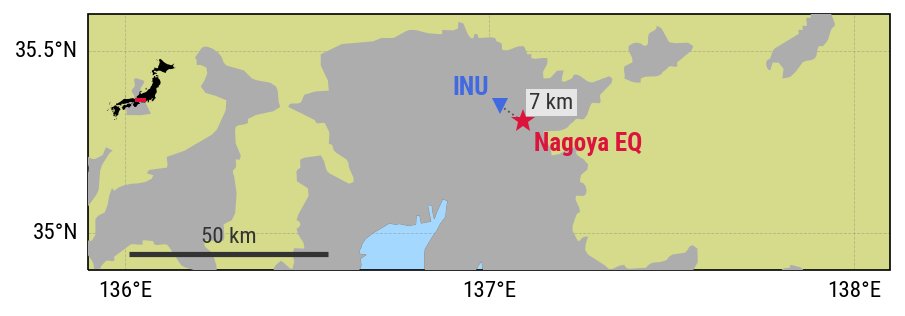
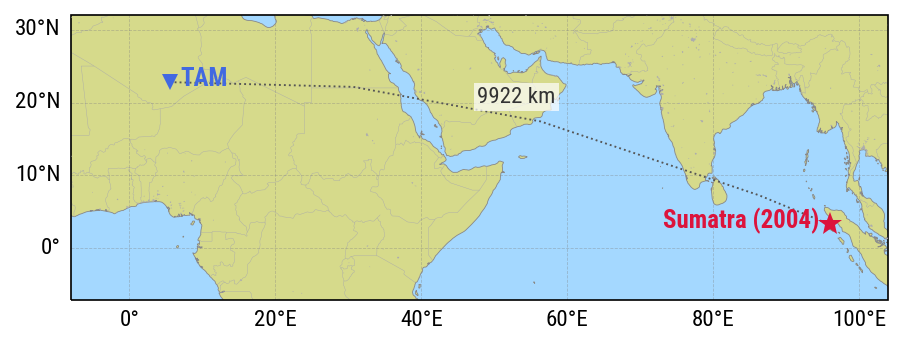

What do earthquakes sound like?
I’m building a collection of sonification of seismic data that I (and others!) can hopefully use to communicate aspects of earthquake physics or wave propagation in the Earth in talks, lectures or outreach activities!
My approach directly descends from the Seismic sound lab project, which I highly recommend checking out.
🔊🔊 For the best experience, use loudspeakers or headphones 🎧🎧
🔗🔗 Follow the links to Freesound for spectrograms and more details 🔗🔗
A small, nearby earthquake

Seismic waves of a M4 earthquake about 30 km from Nagoya, Japan, recorded in Inuyama, a small town near Nagoya, at seismometer INU (GEOSCOPE network), and sped up 100 times: one second audio is about 2 minutes in the data.
You can hear that two wave trains arrive in rapid succession: probably the P-wave first (compression wave) and the S-wave after, accompanied by a small amount of surface waves.
Because the earthquake is near the station, the faster P-wave has no time to separate fully from the slower S-wave, and the two arrive almost together.
A distant, giant earthquake

Seismic waves of the giant Sumatra-Andaman earthquake (magnitude 9.1, 26th Dec 2004), that generated the devastating tsunami around the Indian Ocean, recorded in the Algerian Sahara, at station TAM (GEOSCOPE network). The data is sped up 5,000 times to audible range: 2 seconds audio is about 3 hours in reality.
Now the sound is more complex, different seismic waves from the earthquake are well separated. You can first hear the body wave train (P- and S-waves) as a sharp thud, followed by surface waves as a "woop" sound (a chirp), because the low-pitched waves travel faster than the high-pitch ones. The earthquake was so strong that the surface waves circled the earth several times: you can hear them coming from the other side of the earth rapidly after their first arrival, and then a few times again after that.
You can also hear the sounds of smaller aftershocks of the giant earthquake, each with their distinct seismic wave trains.